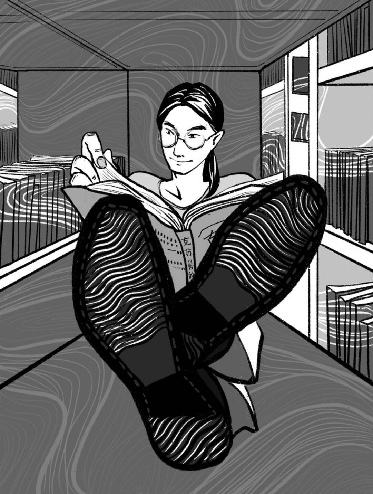

2023 Hugo Awards
Best Fan Writer Finalist
Reading Pack

Cover Artist: Lao Zao (醪糟)
Arthur Liu is a Chinese SFF fan writer and author. As a software engineer living in Beijing, he co-founded the
Chinese Science Fiction Database (CSFDB)
with Sanfeng Zhang
in 2020. He publishes fiction as Yang Feng (杨枫, a name taken from a self-reflective character from his own stories, and not to be confused with the other nominee of that name in the Best Editor[Short Form] category) and fan writings as HeavenDuke(天爵).
He was the editor of the clubzine of the Tsinghua University Science Fiction Association of Students,
with two special issues Kingdom Anonymous and E=mc³: Side-Wonders of Science Studies professionally published.
Translation of his stories have appeared in Clarkesworld and Future Science Fiction Digest,
with a reprint of "The Life Cycle of a Cyber-Bar" to appear in The Big Book of Cyberpunk, due from Vintage/Penguin Random House in September 2023.
He dreams of becoming a web crawler.